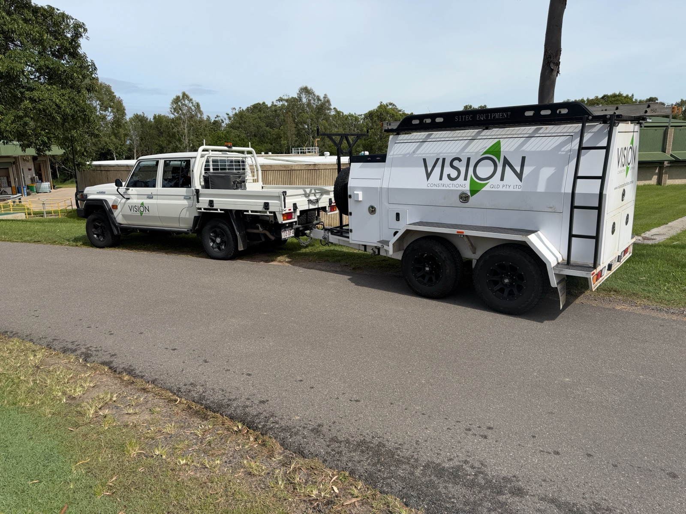
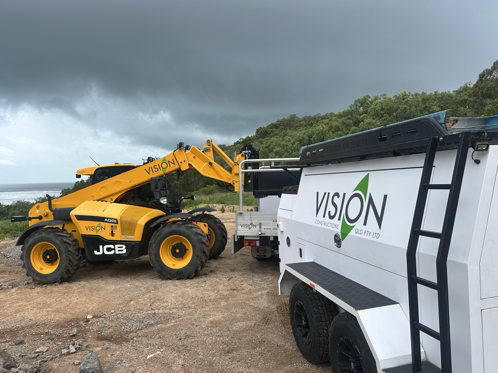

Since 2009, we have grown into a trusted North Queensland construction company — building with purpose, integrity, and genuine care for the people who make our work possible.

At Vision Constructions, we build with purpose, integrity, and genuine care for the people who make our work possible. Since 2009, we have grown into a trusted North Queensland construction company by delivering quality, value, and dependable project outcomes.
Clients choose us because we solve problems, streamline the process, and consistently deliver safe, high-quality projects on time. As a locally owned company, we remain agile and accountable — able to make decisions quickly and confidently.
Our vision is to be known for our people, our integrity, and the quality we deliver in every project.
From a small civil crew on NQ roads to a multi-disciplined contractor delivering marine, resources, and civil infrastructure — here's how Vision grew.
Vision Constructions established as a civil contractor in North Queensland, taking on road and earthworks projects across the region.
Expanded into marine and waterway infrastructure — jetties, boat ramps, and structures across island and coastal communities.
Achieved ISO 9001, ISO 14001, and ISO 45001 certification — formalising the quality and safety systems already embedded in how we work.
Moved into structural, mechanical, and piping work for the resources sector — bringing civil discipline to complex industrial environments.
Over 200 projects completed across civil, marine, and resources — still locally owned, still based in Townsville, still building for NQ.
Honesty, humility, hard work — and making sure everyone goes home safe. Our values aren't a poster on the wall, they shape every decision we make on and off site.
Zero harm is our standard. Every project begins and ends with the safety of our people and the community.
We hold ourselves to ISO 9001 standards and take pride in delivering work that stands the test of time.
As a locally owned NQ business, we invest in the communities where we live and work — employing local people and supporting local suppliers.
We continuously look for smarter, safer, and more efficient ways to deliver projects and reduce our environmental footprint.
ABN 54 136 270 347 · Founded 2009, Townsville QLD.
16 direct employees · Experienced site supervisors, qualified tradespeople & operators, Townsville-based.
ISO 45001 (WHS) · ISO 14001 (Environment) · ISO 9001 (Quality) · Local Buy framework supplier.
Zero lost-time injuries since founding · ISO 45001 WHS system · QLD WHS Act compliant · regular audits.
A small, experienced team based in Townsville — built on expertise, trust, and a genuine commitment to delivering great work.
Managing Director
Engineering & Business Development Manager
Supervisor
Administration & Project Support
Administration
Whether you have a project to discuss or you're looking to join our team — we'd love to hear from you.